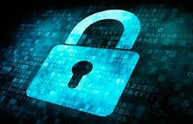

Ciberseguridad en Venezuela
Planes de ciberseguridad en el país Uno de los intentos del país por mejorar las medidas de seguridad en internet fue a través del Plan Nacional de Ciberseguridad y Ciberdefensa en el 2016. Este plan fue implementado por el Mindefensa (Ministerio del Poder Popular para la Defensa), aunque no se tiene mucha información sobre su efectividad.
Hay algunas industrias en el país que son más necesitadas de seguridad en internet. Algunas de ellas son empresas de finanzas, seguros, manufacturación, comercio al por mayor o prestadores de servicios, entre otros.
El país debe invertir en mejorar los softwares de seguridad para proteger a las empresas y enseñar a los empleados a cómo actuar ante este tipo de ataques. Además de crear protocolos de seguridad en las organizaciones.
Después de numerosos casos de ciberataques a empresas y organizaciones de todo el mundo, se espera que se siga trabajando para mejorar la seguridad. Desarrollando nuevas soluciones y alternativas.
Situación sobre los avances en la seguridad en internet
Venezuela no cuenta con una estrategia nacional clara de seguridad en internet. Aunque si existe un sistema de seguridad nacional informática, con el objetivo de implementar medidas que generen confianza, proporcionando niveles óptimos de ciberseguridad. El organismo responsable de este sistema es la Superintendencia de Servicios de Certificación Electrónica (SUSCERTE).
Este organismo es además parte de la sede del VenCERT, encargada de prevenir y gestionar posibles incidentes en los sistemas informáticos de la administración pública del país. VenCERT también tiene entre sus tareas, formar a personas en temas de seguridad cibernética. Aunque todavía queda mucho más por avanzar en cuanto a educación en estos temas.
En relación a materia legislativa, Venezuela cuenta con la Ley Especial contra Delitos Informáticos del año 2001. Esta ley tiene como objetivo proteger los sistemas informáticos, intentando prevenir ataques y sancionando los delitos que se cometen.
Todavía falta una legislación que regule la protección de datos y la privacidad de los usuarios en internet. Solo hay una mención en la constitución acerca del derecho de las personas a poder recuperar, cambiar o destruir información personal en base de datos públicas y privadas. Así como el derecho a la protección de la vida privada.
Empresas de ciberseguridad en Venezuela
Debido a la falta de conocimiento sobre ciberseguridad, este tema se ha convertido en un negocio para muchas empresas privadas que ofrecen sus servicios de seguridad de la información. Se dedican a ayudar a empresas a instaurar protocolos y mejorar sus sistemas TIC.
Algunas de las empresas privadas más conocidas son Amagi, una empresa asentada en iberoamérica que se encarga de desarrollar productos y servicios en materia TIC. Grupo Cinetix, una empresa establecida en el 2000, ofrece servicios de consultoría de seguridad informática. Digitel Corporation, que ofrece servicios a pequeñas y medianas empresas, algunos de sus socios son Microsoft o VMware.
Innova4J es una compañía encargada de desarrollar software y son expertos en tecnología Java. CSG Consultores de sistemas, ofrece servicios de consultoría de sistemas y soluciones sobre las tecnologías de la información. MCS Management consulting, están especializados en la optimización de procesos en la empresa a través del sistema de automatización empresarial SAP.

5 Aspectos de ciberseguridad que todo Auditor debe conocer para evaluar y recomendar
- IDENTIFICACIÓN.
- Es necesario identificar los procesos y activos críticos de la empresa. Conocer cuáles son las actividades de la empresa que necesariamente deben continuar para ser viables.
- Los flujos de información de documentos deben determinarse. Es importante no solo comprender qué tipo de información recopila y utiliza la empresa, sino también comprender dónde se encuentran y como fluyen los datos, especialmente cuando se mantienen contratos con socios externos.
- PROTECCIÓN.
- Es conveniente administrar el acceso a los activos y la información. La compañía debe crear cuentas únicas para cada empleado y asegurarse de que los usuarios solo tengan acceso a la información, las computadoras y las aplicaciones que necesitan para sus trabajos. Hay que administrar y rastrear estrictamente el acceso físico a los dispositivos.
- Deben protegerse los datos confidenciales. Hay que asegurarse de que estos datos estén protegidos por cifrado bien sea mientras se almacenan en las computadoras como cuando están almacenados o transmitidos a otras partes. Hay que eliminar y/o destruir datos de forma segura cuando ya no sean necesarios para fines de cumplimiento.
- DETECCIÓN.
- Es importante desarrollar y probar procesos y procedimientos para detectar acciones no autorizadas en las redes y en el entorno físico, incluida la actividad del personal.
- Hay que mantener y supervisar los registros que permitan identificar anomalías en las computadoras y aplicaciones de la empresa, tales como cambios en los sistemas o cuentas, así como el inicio de canales de comunicación.
- RESPUESTA.
- Los planes de respuesta deben probarse para asegurarse de que cada persona conozca sus responsabilidades en su ejecución. Cuanto mejor preparada esté la organización, más efectiva será la respuesta. Así mismo hay que asegurarse que los planes de respuesta estén actualizados. El plan debe permitir mantener en funcionamiento las operaciones del negocio.
- Coordinar con las partes interesadas internas y externas es útil. Hay que asegurarse que los planes de respuesta y las actualizaciones incluyan a todas las partes interesadas clave y proveedores de servicios externos. Pueden contribuir a mejoras en la planificación y ejecución.
- RECUPERACIÓN.
- Hay que comunicarse con las partes interesadas internas y externas luego de la ocurrencia de un evento. Parte de la recuperación depende de una comunicación efectiva.
- Hay que asegurarse que los planes de recuperación estén actualizados. La ejecución de pruebas mejorará la conciencia de los empleados y socios y destacará las áreas de mejora. Asegúrese de actualizar los planes de recuperación con las lecciones aprendidas.
Te fue de utilidad la informacion de esta pagina